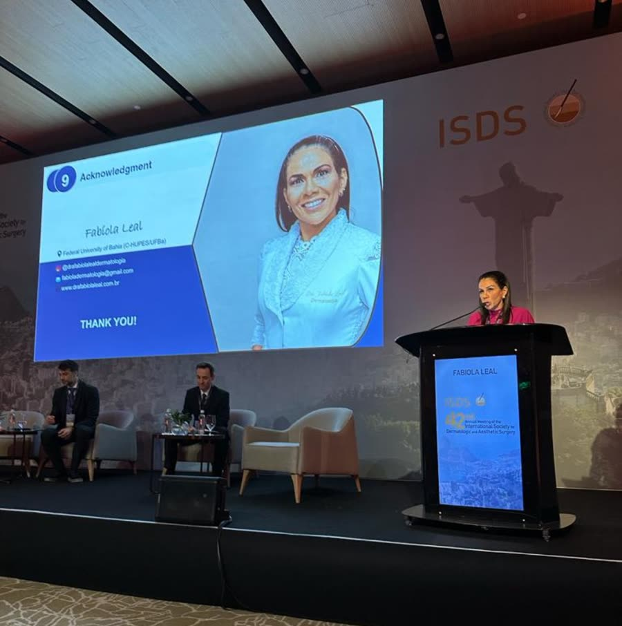

Início · Trabalhos
Aulas, prêmio e publicações.
A Dra. Fabíola ensina, apresenta casos e publica. Uma forma de manter a prática atualizada e de compartilhar o que aprende no dia a dia.
Dra. Fabíola LealDermatologista · CRM-BA 14578 · RQE 7273 · Membro titular da SBCD
2024
1º lugar no Prêmio Dr. Ênio Maynard
“Cicatrização por segunda intenção em defeitos cirúrgicos auriculares: uma série de casos”Categoria Trabalho de Investigação, XXX Jornada Baiana de Dermatologia, SBD Regional Bahia, julho de 2024
Palestrante
Aulas em congressos
- 2024 · Anestésicos locais: técnicas e aplicações na dermatologia cirúrgicaCurso Hands On Anatomy
- 2023 · Cicatrização por segunda intenção na orelha42º encontro anual da International Society for Dermatologic and Aesthetic Surgery, Rio de Janeiro
- 2022 · Tratamento cirúrgico do carcinoma basocelular32º Congresso Brasileiro de Cirurgia Dermatológica, Recife
- 2022 · Conduta inicial no carcinoma espinocelular cutâneoSimpósio de Oncologia Cutânea, SBD Regional Bahia
- 2019 · Qual a conduta? Discussão de casos de câncer de peleCurso de Atualização Terapêutica Dermatológica, SBD Regional Bahia

PubMed
Artigos científicos
International Wound Journal · 2020Acral melanoma mimicking mycotic intertrigoPrimeira autora · Ver no PubMed →JDDG · 2025Optical coherence tomography for assessing port-wine stains: a systematic reviewCoautora · Ver no PubMed →Journal of Cutaneous Medicine and Surgery · 2026Clinical and diagnostic features of onychopapilloma: a systematic reviewCoautora · Ver no PubMed →JAAD International · 2026Genital involvement and psoriasis severityCoautora · Ver no PubMed →
Congressos
Trabalhos apresentados
- Retalho de Mustardé para fechamento de defeitos faciais após cirurgia micrográfica de Mohs · 31º Congresso da Sociedade Brasileira de Cirurgia Dermatológica, 2019
- Variante histológica rara de rinofima abordada por eletrocoagulação, lixamento e ácido tricloroacético · 73º Congresso da SBD, 2018
- Síndrome H: relato de caso · 73º Congresso da SBD, 2018
- Carcinoma espinocelular subungueal: doença rara e subdiagnosticada · 72º Congresso da SBD, 2017
- Hemofilia adquirida · XXXV Reunião Anual de Dermatologistas Latino-Americanos, Bogotá, 2017
Agende
Cada caso é avaliado em consulta.
Três consultórios em Salvador, de segunda a sexta, com hora marcada.